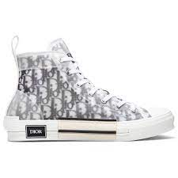

Más que calzado Son una forma de expresión personal, un símbolo de estatus y una inversión para algunos.
Diseñadores: Virgil Abloh, Kanye West, Alexander McQueen y otros han dejado su huella en el diseño de tenis.
Cultura del coleccionismo Los modelos vintage, ediciones limitadas y colaboraciones exclusivas alcanzan precios exorbitantes en el mercado de reventa.
FARFETCH: Puedes explorar una exclusiva selección de tenis de lujo para hombres. Marcas como Nike, Gucci y A BATHING APE® están disponibles en su increíble propuesta. Desde los modelos más legendarios hasta los nuevos lanzamientos, encontrarás opciones que se adaptan a tu estilo.
En El Palacio de Hierro, puedes encontrar una amplia selección de tenis de diseñador Aquí te presento algunas opciones elegantes y lujosas:
Palm Angels.
Givenchy.
TIENDA ESPECIFICA DE LA MARCA.
¡Por supuesto! Los tenis de diseñador son caros principalmente debido a la marca y al prestigio que llevan consigo. Las marcas de diseñador han establecido una reputación por ofrecer productos exclusivos y de alta calidad, lo que les permite fijar precios más altos. Además, estos tenis suelen utilizar materiales de primera calidad en su fabricación, lo que contribuye aún más a su elevado costo.
Algunos ejemplos de ellos son:
New Balance 9060: Estos tenis bajos tienen un precio de $6,806.
Nike P-6000 Light Iron Ore: Un modelo de Nike con un precio de $2,877.
AMIRI MA-1: Estos tenis tienen un estilo único y cuestan $18,935
Hogan H580: Disponibles por $8,206
Jordan Air Jordan 4 Retro “Infrared”: Un clásico de la marca Jordan con un precio de $8,164.
LOUIS VUITTON.
DOLCE & GABBANA
AMBUSH
BALENCIAGA
ALEXANDER MCQUEEN
DIOR
Salas Cruz Luka
Silva Olvera Diego Giovani
Sanchez Gongalez Osvaldo
Solorsano Arias Ervin Alexis
- COPYRIGHT @ 2024